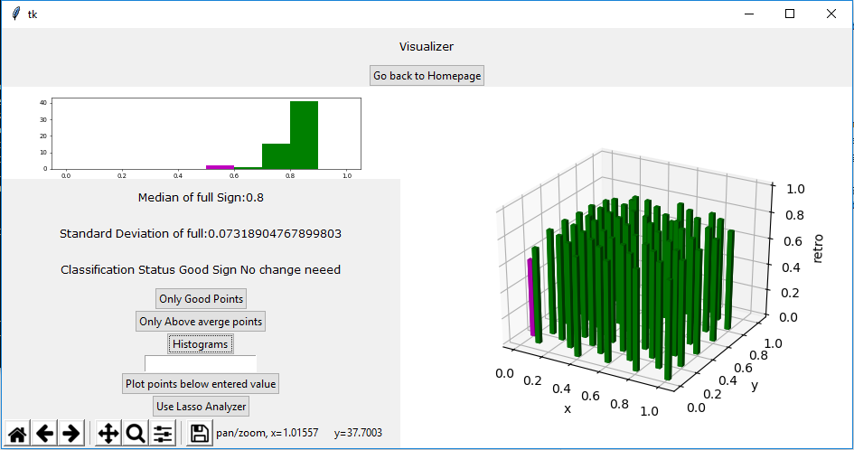
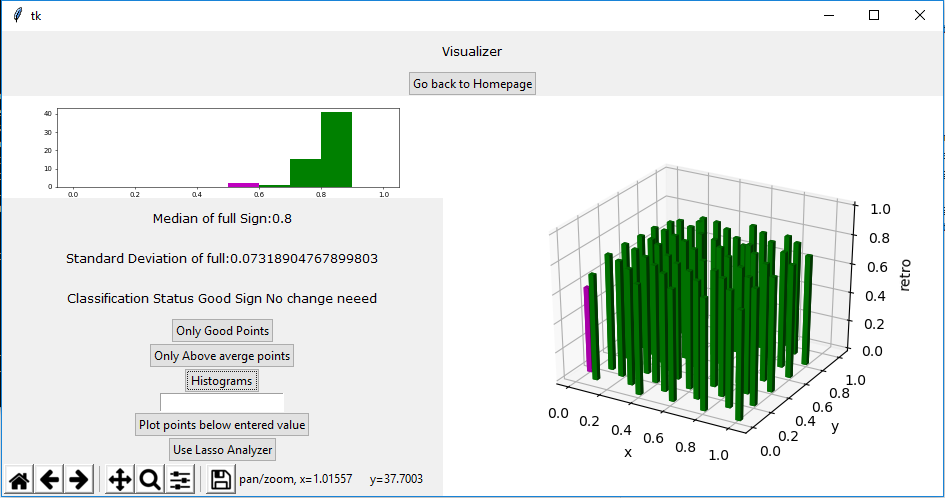

Sai Siddartha Maram.
UX Research, HCI, Video Games, Software
About
Sai is an second-year Ph.D. student at the University of California, Santa Cruz. He works in the GUII Lab under the supervision of Dr.Magy Seif El-Nasr. Sai's research revolves around understanding how humans interact and visualize Multimedia and Technology. His work explores applications of Graph theory and algorithms in the intersection of Culture and Video Games. He has previously worked/interned at companies like Meta (Facebook), Invento Robotics. He was also research scholar at GeorgiaTech and Indian Institute of Science. He is proficient with qualitative (Meta), quantitative research (Invento, personal reserach) methods and a skilled programmer (GaTech, IISc, Invento). He is an ardent follower of Cricket and Indian Cinema and likes to write about himself in 3rd person.
Work Experience
Meta, Menlo Park, USA
UX Research Intern
June 2022-September 2022- Conducted User Interviews with Facebook users to strategize products for the future of Facebook's Top of Home.
- Executed remote Co-Design activities with Facebook users to generate design principles and new experiences for Facebook's Top of Home
- Partnered with Leadership, Data Science, and Product Design (XFNs) to develop prototypes for futuristic experiences on Facebook's Top of Home.
- Developed a plan to push the prototypes for development and production.
Invento Robotics, Bangalore, India
R&D Engineer
June 2020- March 2021; May 2018 - June 2018- Performed Qualitative Research with Stakeholders at various stages of Robot Deployment timeline to design Fleet Control Portals.
- Developed Invento's Autonomus Navigation Stack. Currently the Navigation Stack established has covered over 10,000 Km at various customer locations across 5 continents.
- Developed a Fleet Management Portal to mine patterns in customer interaction with Robots. The portal also allows Humans to take control over the robot to support the growing requirement of Human-In-The-Loop.
- Developed an end-to-end EHR soltuion which is supported with Telemedicine capabilities. Unlike Exisiting Systmes the developed system supports various sensors like Stethoscope, Thermal Sensors, Weight scale and even a otoscope over Telemedicine. Check out the video below about my work being covered in CNN and patients interacting with developed software.
Indian Institute of Science, Bangalore, India
Research Scholar
January 2020 - June 2020- Worked with Professor Yogesh Simmhan at the DREAM Lab.
- Developed Image Masking Algorithms to protect privacy in images. But at the same time made sure objects in these images were detectable through re-trained object detection networks.
- Developed Centralized Contact Graphs for COVID-19 Contact Tracing and perform temporal analysis.

GeorgiaTech, Atlanta, USA
Research Scholar
June 2019 - August 2019- Performed Qualitative Research with Research stakeholders for designing tools for LiDAR data manipulation.
- Worked under Dr. Yi-Chang (James) Tsai, on developing computer vision algorithms and associating them with 3D LiDAR data to generate insigts on road assets. Two very important and significant contributions done by me so far in this lab include, the LiDAR retro-intensity mapper, and the distance estimation algorithm using 2D image and reconstructing pixel depth LiDAR Image Mapper Tool (OpenSource) 2D Depth Approximation Tool (OpenSource) Smartphone Based Traffic Sign detection(OpenSource)
Academic Research Papers
A Visual Ethnographic Study at Cultural Spaces to Identify Character Creation Opportunities
Conference: FDG 2023
Authors: Sai Siddartha Maram, Johannes Pfau, Jai Dodechani, Magy Seif El-Nasr
Conference: FDG 2023
Authors: Jennifer Villareale, Sai Siddartha Maram and Jichen Zhu
Under Pressure: A Multi-Modal Analysis of Induced Stressors in Games for Resilience
Conference: FDG 2023
Authors: Reza Habibi, Johannes Pfau, Sai Siddartha Maram, Jiahong Li, Bjarke Larsen, Jason Xu, Atieh Kashani, Shweta Sisodiya, Jonattan Holmes, Zhaoqing Teng, Elin Carstensdottir and Magy Seif El-Nasr
Conference: CHI PLAY 2022
Authors: Zhaoqing Teng, Johannes Pfau, Sai Siddartha Maram, Magy Seif El-Nasr
Conference: IFIP-ICEC 2022
Authors : Sai Siddartha Maram, Johannes Pfau, Reza Habibi, Magy Seif El-Nasr
Conference: ACM CHI 2022 (Workshop)
Authors: Sai Siddartha Maram, Magy Seif El-Nasr
Gender, Cultures, and Communication
Conference: ACM CHI 2022 (Workshop)
Authors : Shweta Sisodiya, Sai Siddartha Maram, Magy Seif El-Nasr, Elin Carstensdottir
A Data-driven Design of AR Alternate Reality Games to Measure Resilience
Conference: Human Computer Interaction International (HCII) 2022 (Full-Paper)
Authors: Rëza Habibi, Sai Siddartha Maram, Johannes Pfau, Jessica Wei, Shweta Sisodiya, Atieh Kashani, Elin Carstensdottir, Magy Seif El-Nasr
CricNet : Segment and Classify Cricket Events
Conference: ICML (Un-Workshop)
Authors: Sai Siddartha Maram, Shambhavi Mishra
Images to Signals, Signals to Highlights
Conference: IEEE GLOBECOM 2020 (Full-Paper)
Authors: Sai Siddartha Maram, Neeraj Kumar, Joel J. P. C. Rodrigues, Sudeep Tanwar, Arjav Jain Presentation
Asking Graphs "How Did I Play?" Generating Graphs through Images Via Signals
Conference: ACM Multimedia (Workshop 2020)
Authors: Sai Siddartha Maram, Arjav Jain Presentation
Neural network and ROS based threat detection and patrolling assistance
Conference: IEEE ICACCP 2019
Authors: Sai Siddartha Maram, Tanuj Vishnoi, Sachin Pandey
Projects
A UX Case Study for Enhancing Online Fashsion Shopping Experience


Sai Siddartha Maram
UX/UISai Siddartha Maram
Tags
Qualitative Research, Figma,
What is this!
A Qualitative Study aimed to identify pain points in shopping experiences of Indian Women. I performed user interviews, developer personas. We built journey maps of these personas and identified pain points. This Qualitative Study is followed by developing a concept application to address these pain points. (work in progress)
Captain Bohr-Curie.
Sai Siddartha Maram
Tags
Unity, HCI, Education
What is this!
Chemistry is thought across the world. But the access to platforms and technology (AR/VR) to visualize and help in memorizing chemistry concepts is limited to few first world countries. We Introduce a cross platform 2D mobile game. Which helps students to learn, visualize and memorize concepts. Captain Bhor our male protagonist or Captain Madame Curie our female protagonist move around various Zones in a story built carefully to align with chapters in the textbook or concepts in chemistry. For example, a level beside the sea shore would discuss about Sodium, Magnesium Salts, their reactions. Each Zone has games built to strengthen memory and visualization of the concepts involved.
Motivation and Impact
Chemistry is one of the core subjects when it comes to preparation for Graduate school. Students between the age of 12-16 undertake chemistry classes for preparation of their SAT, JEE, ICho and other competitive examinations. Certain areas in the subject involve a component where a student has memorize a lot of concepts. There have been studies statistically measuring what percentage of students find chemistry hard and also their reasons. This project/research aims to address the reasons. This research proposal aims to use gaming as a modality to blackuce the negative affinity towards chemistry.
Sense.
Sai Siddartha Maram
Tags
Unity, HCI, Education
What is this!
The rise in Online education and Distance Education has taken a toll on Physical Fitness and Physical Training Education. Staying at home also increased screen time for students. We explore ways to use screen time of students to indulge them into physical fitness. We use game motivational models to allow users develop intersts towards fitness based games.
Motivation and Impact
Chemistry is one of the core subjects when it comes to preparation for Graduate school. Students between the age of 12-16 undertake chemistry classes for preparation of their SAT, JEE, ICho and other competitive examinations. Certain areas in the subject involve a component where a student has memorize a lot of concepts. There have been studies statistically measuring what percentage of students find chemistry hard and also their reasons. This project/research aims to address the reasons. This research proposal aims to use gaming as a modality to blackuce the negative affinity towards chemistry.
Traffic sign condition assesment using 3D LiDAR point clouds.
 

Transportaion Lab: GeorigaTech
CodeSai Siddartha Maram
Tags
Tkinter, Python, LiDAR
What is this!
This project was finished under Dr. Yi-Chang (James) Tsai at GeorgiaTech, Atlanta. The project is completley sponsored by Georgia Deapartment of Transportation. This project deals with establishing a mathematical relation between the collected point clouds from LiDAR data and provide insights in the form of condition assesment, retro-intensity peaks. The project has been finished and is open source can be found at Github link . This visualization project has played a critical contribution for GeorgiaTech's and GDOT's win at https://research.transportation.org/sweet-sixteen-2020/. This open source tool developed by me allows reserachers to study LiDAR points to great precisions and visualize it. It allows to users to select clusters of points, indvidual point an provides statistics of the selected LiDAR points. These tools help in understanding the quality of traffic signs. For the entire Internship duration I have recieved an A grade from GeorgiaTech and Dr. Yi-Chang James Tsai.
Open Player Modelling and Player Analytics

NSF Project Team
Principal Investigator: Dr. Magy Seif El-Nasr, Dr. Jichen
CodeSai Siddartha Maram, Chandra Moulika
Tags
Graphs, Player Modelling, Game Trace Abstraction
What is this!
playParallel is a game designed to help undegraduate students undertand the concepts of operating systems and parallel programming. The Game involves threads (arrows) moving in specificed paths with objectives of delivering certain resources to certain destinations. The user is requrired to place semaphores and link them with signals to allow all the arrows complete their tasks. This is an analogy to how there is a need to distribute resources among processes in a computer. The sample space for possible spatial settings of the board is huge. This makes it challenging to compare player board traces and show important solutions to struggling students. Leading the abstraction team I developed a zone based abstraction bringing the sample down greatly. This allowed us find common states between users and direct players to simillar board states for students who went on to solve the level.
Nitya.
.jpg)
.png)
.jpg)
.jpg)
Sai Siddartha Maram
CodeSai Siddartha Maram, Tanuj Vishnoi
Tags
HCI, Fashion, Computer Vision, AI, IoT
What is this!
The project came into life addressing, the ever growing sexual abuse across the globe. Mobile applications which were thought to prevent the problem came into rise but they neve took off. 'Nitya' is a computer vision solution developed on the prinicples of HCD. It is a vest with computer vision modules attached to it. It allows the user to capture and inform people when they feel unsafe. It covers all corner cases such as no network connectivity. This project was an award winner at hackathons and has been filed for a patent. Patnet Number (filed): 201911005811
Novelty and Impact
To the best of my knowledge 'Nitya' is the only prototype which leverages computer vision to tackle physical abuse.The market for personal Saftey is immense and is also critical for every growing evils.
Rapid Pest Control and Field Analysis Application.
Sai Siddartha Maram
CodeSai Siddartha Maram, Tanuj Vishnoi
Tags
HCI, Fashion, Computer Vision, AI, IoT
What is this!
Rapid Pest control and field analysis application The project involved in developing android applications for the farmers of Gujarat, to treat pest infestation by providing an easy and yet informative medium of communication between agriculture scientists at the National Innovation Foundation and farmers trying various seeds and new practices. This project was widley appreciated and covered in the media for the amount of impact it had on the local farmers. This project was part of my internship with Dr.Anil Kumar Gupta at IIM-A, NIF India and SRISTI UNICEF.
Novelty and Impact
This project is very close to my heart, this was built over numerous discissions with farmers. The amount of user research which went in the product was unique. We heard stories from farmers on how they struggled in sharing data. We also heard how animals were vandalizing crops for which we came up with a computer vision based solution in a Research Paper.

MiTRA and MiTRi : Your Robot Friends.
Invento Robotics
Code (Navigation, Interactions)Sai Siddartha Maram, Aswin Kumar, Raushan Kumar
Tags
HRI, HCI, Robotics, ROS, Healthcare
What is this!
Mitra Means Friend in Sanskrit. With the rise in the pandemic, we identified that isolation of patients causes a toll on their mental helath. Apart form that the proximity doctors and nurses get to treat the patients, puts them at high risk. To address this, we equipped out Robot with Autonomus navigation capabilities and on board medical devices which allow the robot to interact and collect data from patients.
Novelty and Impact
Unlike regular Zoom, Skype Patient-Doctor interaction. We built our own custom WebRTC based interface, which allows doctors to see the patient visually and also on the same screen monitor his vitals collected by Mitra. Being used currently in India's Biggest Hospital Chains, Apollo and Fortis. Treated and Screened over 10,000 beds
COVID19: RoboDoc and C-Astra.
Invento Robotics
Code (Navigation, Interactions)Sai Siddartha Maram, Aswin Kumar, Raushan Kumar
Tags
HRI, HCI, Robotics, ROS, Healthcare
What is this!
Astra stands for "weapon" in Sanskrit. As a Research Engineer at Invento Robotics, I was part of building Navigation and Computer Vision algorithms for C-Astra and RoboDoc. These robots were built as soon as the pandemic broke loose. Today these robots are deployed across multiple hospitals across India and performing operations ranging from patient screening, thermal checkups, patient interactions, food and medicine delivery and area disinfection. This project is creating a positive impact on how frontline workers are dealing with the pandemic. Major Contributions from my side include: Developing ROS Nodes for Navigation. Developing analytics and metrics for Robot Performacne. Developing a custom tele-communication (webRTC) portal for patients and doctors which can perform diganosis through AI by collecting data from on board pulse-oximeters and other medical equipment.
Novelty and Impact
First Robotics Fleet in the world to introduce a concept called 'Reusable Robotics for healthcare'. Both robots RoboDoc and C-Astra use the same base and allow us to provide Mobility as a Service.
Images to Graphs via Signals.
Sai Siddartha Maram
CodeSai Siddartha Maram, Arjav Jain
Tags
HCI, Sport, Multimedia, Computer Vision, Data Mining
What is this!
Cricket is an integral part of India. After discussion with cricket coaches across India, we identified the need of a scientific method to generate analysis and structure data in cricket. We developed an image processing and computer vision based approach to segment cricket matches into events and generate graphs. These graphs have shown potential to allow coaches to perform queries over them and extract the required data.
Novelty and Impact
Unlike football which is run based on clubs, cricket is played to a great extent at both international and league stages. For example Players from Australia and India in the same team in a league, suddenly become arch rivals while representing their countries. There is a lot of knowledge sharing which happens when players play together and against each other. We look to capture such patterns and help coaches to pick right teams against the opponents and help players improve against certain rivals.
Human In The Loop.


Invento Robotics
CodeSai Siddartha Maram, Aswin Kumar, Raushan Kumar
Tags
Django, Javascript (ros2d.js,ros3d.js)
What is this!
Human in the Loop Systems have seen a great rise in the recent years. With fast changing environments and different dilects, autonomus conversation and navigation is still a far stretch for humanoid robots. To counter this and increase the engagement of robots with humans, we built a server supported portal to enable HITL. This allows the robot manager (doctors, owner, students etc) to take control over the robot and enage in conversations with patients, guests. Feel free to log on to fleetui.mitrarobot.com to drive robots around and enage in conversations with people!
Semi-Autonomous Robots for brick field workers and Computer Vision based Border Survellience.
.jpg)
.jpg)
.jpg)
.jpg)
Sai Siddartha Maram, Tanuj Vishnoi
CodeSai Siddartha Maram, Tanuj Vishnoi, Parv Aggarwal, Tammana More
Tags
Robotics, Computer Vision, Navigation, IoT
What is this!
This project was developed to counter the growing back pain in female brick field workers, who carry hevey weights on their skull and forehead. There is computer vision module which allows the live streaming of data and identification of popular construction sight material. The innovative design allows easy maneuver of the bot with hevey weights on various difficult terrains for humans to move around. The application of the bot is not just restricted to constuction sights can also be used counter terrorism operations and medical emergencies on battle fields.
Novelty and Impact
Building robots is generally considered expensive. We built this entire project at a cost of $150. This allows it to be used more extensively. Unlike regular robots, which are dicyclic or bipedal, to counter tough terrains and navigate over bricks and rocks, we use the NASA inspired Martian Rover design.